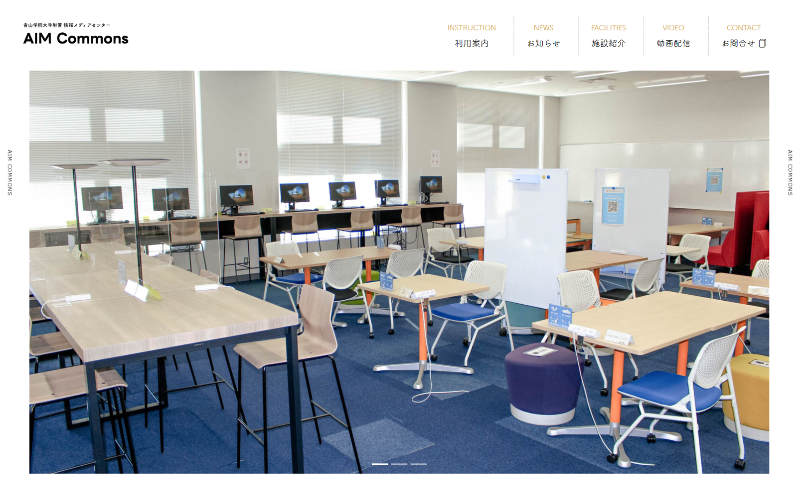

Session
Booth
About AIM Commons
- Special Thanks -
AIM Commons（B422）は情報メディアセンターが提供する共同学習スペースです。友人らと議論をしながら、より質の高い自習を行うことができます。
また、AIM Commonsは学生の皆さんに映像収録機器・動画編集ブース貸出サービスを提供しています。それらは、学生証を提示することで、無償でかつ速やかに借りることができます。
詳細はAIM Commonsホームページをご覧いただくか、直接B422へお越しください。学生スタッフが対応させていただきます。
※以下の写真は、AIM Commons HP のスクリーンショット
